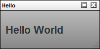

Custom Widget Basics
Although any execution environment can interact with TACTIC by interfacing through the Client API, most often, users will be interacting with TACTIC through the browser. TACTIC’s main interface is the browser. All browsers come with the Javascript language interpreter built-in and thus any rich interface that integrates with TACTIC will need to interact with the various components using Javascript.
Three core frameworks in TACTIC work together to create a rich web interface.
-
CustomLayoutWdg: provides the ability to create the visual interface by laying out widgets using HTML templating
-
Behaviors: provides a framework to create complex behaviors that is much easier to use than the browsers default event system.
-
Applet: provides the interaction to the client machine to do operations that the browser would otherwise not be permitted to do
The TACTIC Client API can access server functionality through the TacticServerStub in the same manner as its Python equivalent. Note the similarities in code structure in the following example:
Python code:
server = TacticServerStub.get()
snapshot = server.checkin(search_key, context, path, mode="upload")
print snapshot.get("code")
Javascript code:
var server = TacticServerStub.get();
var snapshot = server.checkin(search_key, context, path, {mode: "upload"} );
alert(snapshot.code)
There are a few differences due to the syntax of the two different languages. Keyword arguments are not natively supported by Javascript. Since some of the functions in the server stub have numerous arguments, it is desirable to only use those that are needed without having to "fill in" all of the preceding arguments with nulls.
For example, the previous Javascript code would have to read like the above:
server.checkin(search_key, context, path, null, null, null, null, "upload")
In general, a given function will have a few necessary arguments and all "optional" arguments are given in a kwargs dictionary. Another difference is that the sobjects returned are Javascript "objects" whose members are values from the database. Attributes can be accessed in two ways:
-
code = snapshot['code']
-
code = snapshot.code
The most convenient method to test and implement the Javascript examples is in the TACTIC Script Editor. This can be convenient accesses by pressing the "9" hot key to bring it up. Alternatively, the TACTIC Script Editor can be brought up under the gear menu under: Tools → TACTIC Script Editor.
This is a simple "Hello World" example.
<html>
<h1>Hello World</h1>
</html>
The XML document embeds an HTML tag that will be used to layout elements in the application.
The simplest way to view this is to open up the TACTIC Script Editor and input the following code:
var html = "<html><h1>Hello World</h1></html.>";
var kwargs = {
'html': html
};
spt.panel.load_popup('Hello', 'tactic.ui.panel.CustomLayoutWdg', kwargs);
// NOTE: this should be:
// spt.api.load_popup('Hello', 'tactic.ui.panel.CustomLayoutWdg', kwargs);
This previous code is completely in Javascript, however, layout pages using strings in Javascript rapidly becomes unwieldy. It is thus preferential to create these layouts using the widget config. This is done by going to the side bar and going to Project Admin → Widget Config. This will open up the "widget_config" table. This table is used to store all custom interface configurations for widgets.
Create a new entry by pressing the [+] button on the right side. Input the following into the config*field and for *view input example01.<config> <example01> <html> <h1>Hello World</h1> </html> </example01> </config>
This is the full XML document describing the widget config. Note that the HTML is now embedded within that XML document. This will be important to know later when behaviors and elements are added to the widget.
Finally, in the TACTIC Script Editor, enter the following:
kwargs = {
view: 'example01'
};
spt.panel.load_popup('Example01', 'tactic.ui.panel.CustomLayoutWdg', kwargs);
The following will appear when you click on "Run" in the TACTIC Script Editor the script above:

Add a new entry to the widget_config table with view = 'example02' and with the following config definition.<config> <example02> <html> <span>This is a button:</span> <input type='button' class='button1' value='Press Me'/> </html> <behavior class='button1'>\{ "type": "click_up", "cbjs_action": ''' alert('Hello World'); ''' }</behavior> </example02> </config>
In this example, an HTML button is added to the HTML layout. By default, a button doesn’t do anything when it is clicked. A behavior has to be added for something to happen. TACTIC behaviors are added to DOM elements by their class attributes.
When the button is clicked (corresponding to the "click_up" event type), the Javascript in the "cbjs_action" attribute is executed. This example will alert a "Hello World" message on clicking.
The following example will add a text area to the interface as well as extract information from that text area once the button has been clicked.
<?xml version='1.0' encoding='UTF-8'?>
<!-- This examples displays some html UI and then reacts to it using the TACTIC
behavior system -->
<config>
<example03>
<html>
<div class='spt_top'>
<textarea name='description' class='spt_input'></textarea>
<input type='button' class='spt_button1' value='Press Me'/>
</div>
</html>
<behavior class='spt_button1'>{
"type": "click_up",
"cbjs_action": '''
var top = bvr.src_el.getParent('.spt_top');
var values = spt.api.Utility.get_input_values(top);
var description = values.description;
alert('You entered: ' + description);
'''
}</behavior>
</example03>
</config>
Note that currently, get_input_values() requires that every input element have class='spt_input' attribute. Future versions may remove this requirement, but currently this is necessary.
Please note that when an API for 2.6/2.7, the following lines will be changed:
The following line:
var values = spt.api.Utility.get_input_values(top);
will be replace by:
var values = spt.api.get_input_values(top);
The following line:
var top = bvr.src_el.getParent('.spt_top');
will be replaced by:
var top = spt.api.get_parent(bvr.src_el, ".spt_top");
The behavior definition warrants a closer examination:
<behavior class='spt_button1'>{
"type": "click_up",
"cbjs_action": '''
var top = bvr.src_el.getParent('.spt_top');
var values = spt.api.Utility.get_input_values(top);
var description = values.description;
alert('You entered: ' + description);
'''
}</behavior>
First, there is an implied bvr object that exists in the namespace of the behavior. This bvr objects contains useful data for the purposes of executing behaviors. The most important attribute is "bvr.src_el". This element is the source element that called the event. This element can be used as a starting point to navigate the DOM to search for elements.var top = bvr.src_el.getParent('.spt_top');
It is common practice to find a top level element of a widget from the source element. This top element is a starting point from which searches under a DOM hierarchy can be made. By starting from a top element, it is ensured that the returned values are isolated to that single widget.
The next line gets all of the values of all of the input elements under the top element.var values = spt.api.Utility.get_input_values(top);
This returns a dictionary of name/value pairs of all of the input elements underneath the top element.
By adding expressions to a report, it becomes very easy to create reports that extract important information and combine it into a single view.
<?xml version='1.0' encoding='UTF-8'?>
<config>
<example04>
<html>
<h1>My login is [expr]$LOGIN\[/expr]</h1>
<table>
<tr>
<td>Number of tasks</td>
<td>[expr]@COUNT(sthpw/task)\[/expr]</td>
</tr>
<tr>
<td>Number of checkins</td>
<td>[expr]@COUNT(sthpw/snapshot)[/expr]</td>
</tr>
<tr>
<td>Number of model checkins</td>
<td>[expr]@COUNT(sthpw/snapshot\['context','model'])[/expr]</td>
</tr>
</table>
</html>
</example04>
</config>
Expression can be added into the html code by inserting it between [expr][/expr] tags. The expression will be evaluated and the result will be replaced into the html. This provides an ability to layout an arbitrary layout in javascript and then fill in the missing data with expressions. The full power of the TACTIC expression language is available. Please refer to the expression language reference for more information on the expression language.
The CustomLayoutWdg can make use of the Mako templating engine to create dynamic content. Mako is a powerful templating system similar in concept to PHP, but instead uses the Python programming language. The expression language on its own is quite powerful, but it is still and expression lanaguage and sometimes, it is necessary to have full programming logic. Mako provides a path to create content that is too complex for the expression alnaguage to handle alone.
The following example shows a report generated with the help of Mako:
<?xml version='1.0' encoding='UTF-8'?>
<!-- Simple test using mako templating -->
<config>
<example06>
<html>
<div>
<![CDATA[ <%
# get some data total = 0
for ctx in ['model', 'texture', 'rig']:
num_snapshots = server.eval("@COUNT(sthpw/snapshot\['context','%s'\])" % ctx)
context.write("Number of %s checkins: %s<br/>" % (ctx, num_snapshots) )
total += num_snapshots
%>
Total number of tasks: ${total}<br/>
]]>
</div>
</html>
</example06>
</config>
All code between <% and %> tags are parsed as python code and executed on the server. In order to write out to the html, Mako uses the context.write() method. This is important to note because the "context" is a reserved word in Mako. This can cause a confusing error because context is a common variable name when programming in TACTIC.
context.write("Number of %s checkins: %s<br/>" % (ctx, num_snapshots) )
The python code with the python block can still make use of the entire TACTIC Client API through the use of a builtin variable "server". This also means that expressions can be acccesed here as well:
num_snapshots = server.eval("@COUNT(sthpw/snapshot['context','%s'])" % ctx)
Also note that the entire Mako code is wrapped around an XML CDATA block ( <![CDATA[ …]]> ). This is because python code very easily breaks XML integrity rules. The CDATA block allows for any special characters to be entered in the XML document. It is good practice to add the CDATA tags in order to avoid errors later on.
Any variables that are declared in python blocks can be accessed outside of the python blocks using the ${var} syntax. The following will replace ${total} with the corresponding variable defined in the python block.
Total number of tasks: ${total}<br/>
Combining the expression language with Mako Templating provides unlimited flexibility in creating complex reports.
The CustomLayoutWdg can be used inside of a table element. This makes it easy to create arbiraritly complex table elements within a standard TACTIC table layout widget. The following displays the number of tasks for the row sobject.<config> <my_view> <element name='num_tasks'> <display class='tactic.ui.panel.CustomLayoutWdg'> <html> <div class='top'> <b>[expr]@COUNT(sthpw/task)[/expr] tasks</b> </div> </html> <behavior>\{ 'type': 'load', 'cbjs_action': ''' var search_key = bvr.kwargs.search_key; alert(search_key) ''' }</behavior> </display> </element> </my_view> </config>
This element behaves just like the previous CustomLayoutWdg, however there are a few additions. There is a starting sobject that corresponds to the table row that is passed in and is used as the starting sobject for all expressions. The following expression finds the number of tasks for the sobject in question and not all of the tasks in the system.<b>[expr]@COUNT(sthpw/task)[/expr] tasks</b>
Another addition is that callbacks have the search key of the sobject for the row available through the bvr object passed into the behvaior callback.var search_key = bvr.kwargs.search_key;
With the search key, it becomes possible to use the client API to change data or checkin files for that specific sobject.
It is often necessary to be able to interact with the server using Javascript in a behavior callback. This is done using the Javascript implementation of the TACTIC Client API
The following example illustrates how to interact with the server using the TacticServerStub object. This object is used to issue commands that will be run on the server such as updating data in the database or checking in files.
First, add any image in "C:/Temp/test.jpg"
<?xml version='1.0' encoding='UTF-8'?> <config> <example04> <html> <div class='spt_top'> <textarea name='description' class='spt_input'></textarea> <input type='button' class='spt_button1' value='Press Me'/> </div> </html> <behavior class='spt_button1'>\{ "type": "click_up", "cbjs_action": ''' var top = bvr.src_el.getParent('.spt_top'); var values = spt.api.Utility.get_input_values(top); var description = values.description; var applet = spt.Applet.get(); var paths = applet.open_file_browser("C:/Temp"); var path = paths[0]; var search_key = bvr.kwargs.search_key(); var server = TacticServerStub.get(); server.checkin(search_key, "icon", path, \{description: description}); ''' }</behavior> </example04> </config>
The applet is used to interact with the client machine. It defines a number of useful methods such as listing directories, moving and copying files, uploading and downloading files. For a complete list of the functionality present in the applet, please refer to the Applet Reference manual. In this case, the example is using the applet to open up a file browser so the user can select a file.
var applet = spt.Applet.get();
var paths = applet.open_file_browser("C:/Temp");
var path = paths[0];
The search key can be obtained from the behavior. This will be required to check into the correct sobject.var search_key = bvr.kwargs.search_key();
Once a file path has been selected, the server stub is used to check in the file to the server.var server = TacticServerStub.get(); server.checkin(search_key, "icon", path, \{description: description});
Generally, it is not desirable to show a full interface for the checking directly in the table cell. It is much cleaner to have a simple publish button that will open up the interface in a pop-up.
Many widgets are defined on the server side. These can be integrated in a custom interface by using the TACTIC specific <element> tag in the html definition of a CustomLayoutWdg.<config> <example11> <html> <h1>This is a list of users</h1> <element name='users'/> </html> <element name='users'> <display class='tactic.ui.panel.TableLayoutWdg'> <search_type>sthpw/login</search_type> <view>table</view> </display> </element> </example11> </config>